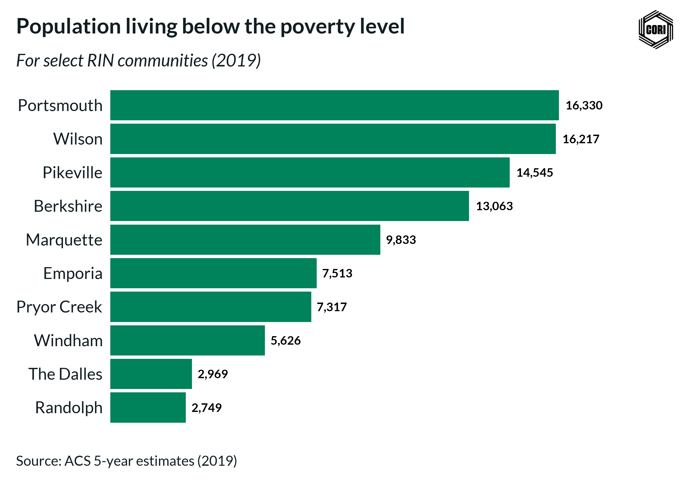
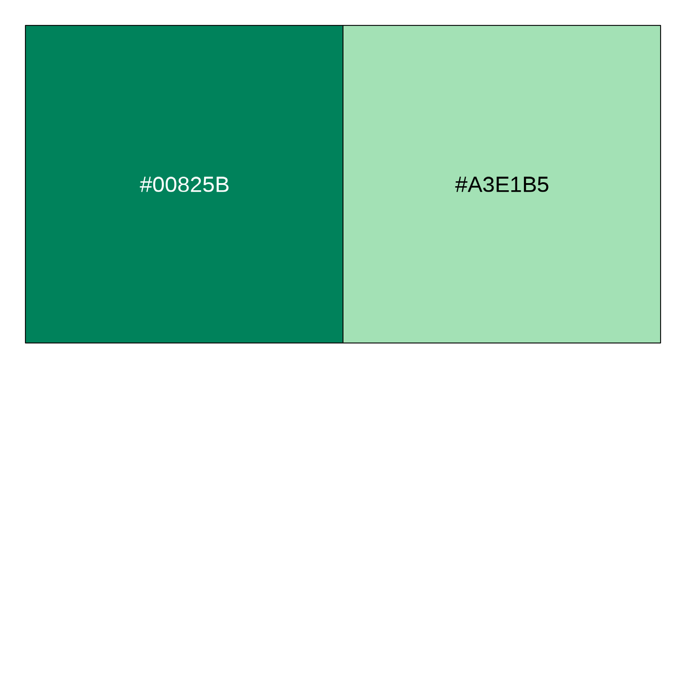
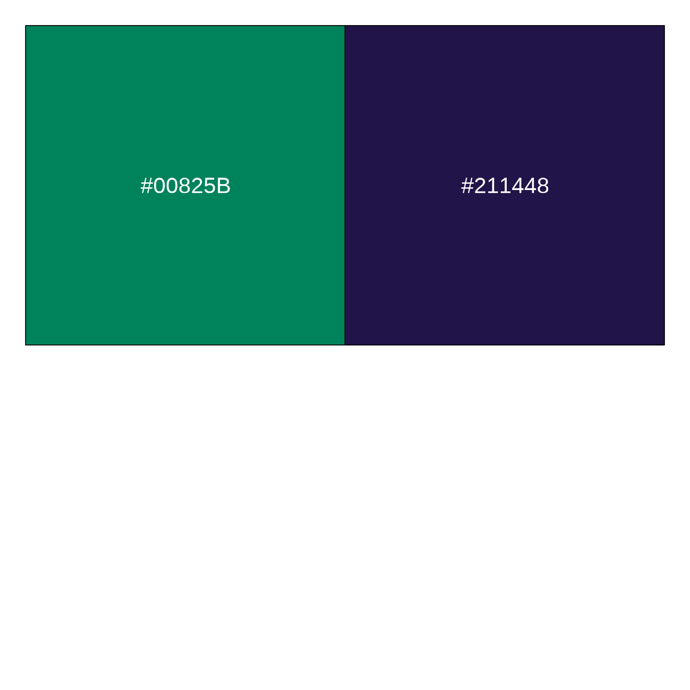
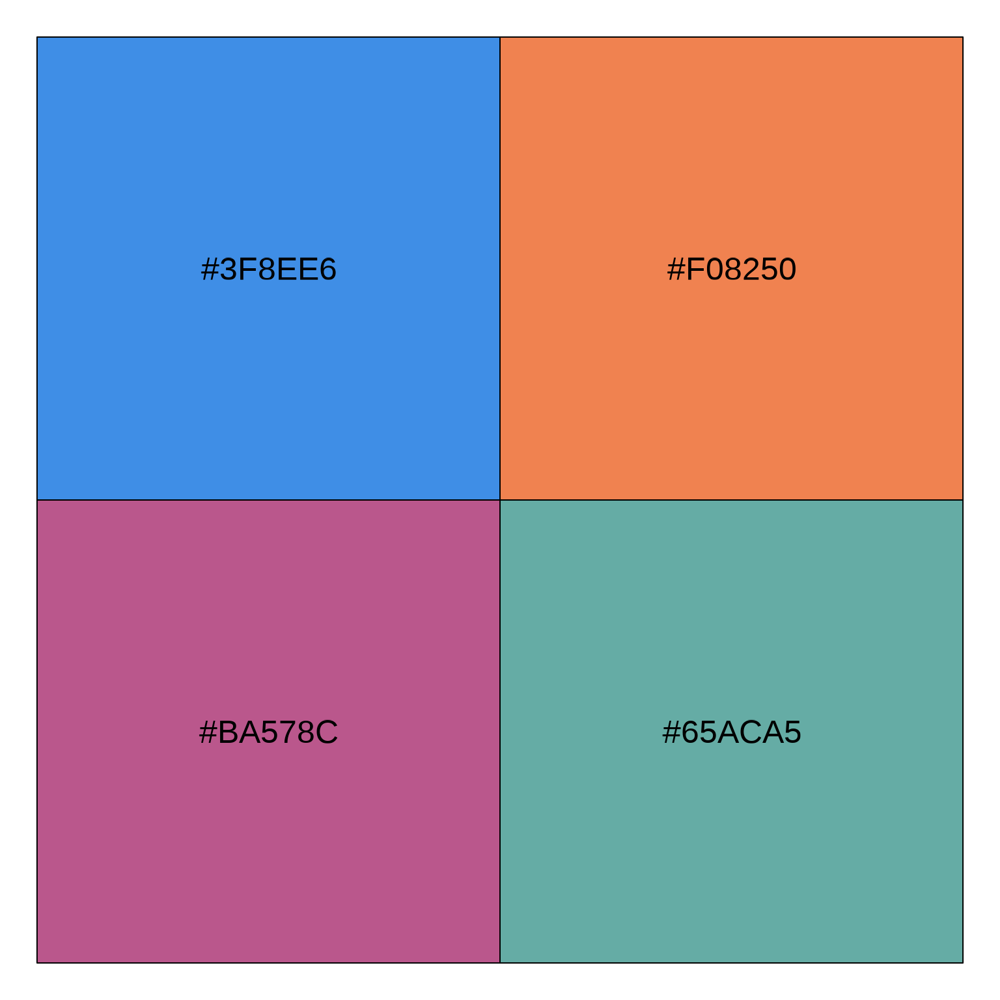

Data visualization cookbook for the Center for Rural Innovation
Source:vignettes/cookbook.Rmd
cookbook.RmdSetup
Load fonts into your environment
# For easily loading default Lato and Bitter fonts
# but you can specify other fonts too
cori.charts::load_fonts()Load your data
We will be using a dataset which gives the population with an income below the poverty level in the last 12 months for a subset of RIN communities.
data(cori_poverty)
dplyr::glimpse(cori_poverty)
#> Rows: 10
#> Columns: 8
#> $ rin_community <chr> "Berkshire", "Emporia", "Marquette",…
#> $ state_abbr <chr> "MA", "KS", "MI", "KY", "OH", "OK", …
#> $ county <chr> "Berkshire", "Crawford", "Marquette"…
#> $ geoid_co <chr> "25003", "20037", "26103", "21195", …
#> $ estimate_pop_2014 <dbl> 130064, 39277, 67535, 64380, 78520, …
#> $ estimate_pop_2019 <dbl> 126425, 38968, 66686, 59497, 76040, …
#> $ estimate_below_poverty_level_2014 <dbl> 15746, 8102, 10597, 15238, 18284, 83…
#> $ estimate_below_poverty_level_2019 <dbl> 13063, 7513, 9833, 14545, 16330, 731…Now we are ready to begin charting!
Chart Recipes
Horizontal Bar Chart
fig <- cori_poverty %>%
ggplot2::ggplot(
aes(
estimate_below_poverty_level_2019,
# Make RIN communities appear in descending order
# based upon their population below the poverty level
reorder(rin_community, estimate_below_poverty_level_2019)
)
) +
# Set the bar color the the CORI "Emerald" color
ggplot2::geom_col(fill = cori_colors["Emerald"]) +
# Add data labels to the bars
geom_text(
aes(
# You can adjust the scales function depending on the desired
# number format (e.g., percent, dollar, etc.)
label = scales::number(
estimate_below_poverty_level_2019,
# accuracy determines what number to round to
# (e.g., accuracy = 0.01 will show 2 decimal places)
accuracy = 1,
# big.mark determines the character used between
# every 3 digits to separate thousands
big.mark = ","
)
),
fontface = "bold",
# Provide spacing between the data label and the bar position
hjust = -.2,
# Data labels need to have their font family explicitly set to "Lato"
family = "Lato"
) +
ggplot2::scale_x_continuous(
# labels determines whether tick labels are shown
labels = NULL,
# You can provide an expansion multiplier to the axis to ensure that
# data labels will have enough space
expand = expansion(mult = c(0, .25))
) +
# Call the horizontal bar theme to pull in default CORI theming
theme_cori_horizontal_bars() +
# Provide Title, subtitle, etc.
ggplot2::labs(
title = "Population living below the poverty level",
subtitle = "For select RIN communities (2019)",
y = NULL,
x = NULL,
caption = "Source: ACS 5-year estimates (2019)"
)
# Always design a viz off a saved export
# Fixed dimensions are so important when designing!
cori.charts::save_plot(
fig,
here("vignettes/images/pop_below_pov_level.png")
)
Grouped Bar Chart
Pivot the data into a long format for easy plotting
grouped_bar_data <- cori_poverty %>%
mutate(
percent_below_poverty_2014 = estimate_below_poverty_level_2014 / estimate_pop_2014,
percent_below_poverty_2019 = estimate_below_poverty_level_2019 / estimate_pop_2019
) %>%
pivot_longer(
contains("percent"),
names_to = "year",
values_to = "percent_below_poverty"
) %>%
mutate(
year = str_remove(year, "percent_below_poverty_"),
rin_community = reorder(rin_community, percent_below_poverty)
)
glimpse(grouped_bar_data)
#> Rows: 20
#> Columns: 10
#> $ rin_community <fct> Berkshire, Berkshire, Emporia, Empor…
#> $ state_abbr <chr> "MA", "MA", "KS", "KS", "MI", "MI", …
#> $ county <chr> "Berkshire", "Berkshire", "Crawford"…
#> $ geoid_co <chr> "25003", "25003", "20037", "20037", …
#> $ estimate_pop_2014 <dbl> 130064, 130064, 39277, 39277, 67535,…
#> $ estimate_pop_2019 <dbl> 126425, 126425, 38968, 38968, 66686,…
#> $ estimate_below_poverty_level_2014 <dbl> 15746, 15746, 8102, 8102, 10597, 105…
#> $ estimate_below_poverty_level_2019 <dbl> 13063, 13063, 7513, 7513, 9833, 9833…
#> $ year <chr> "2014", "2019", "2014", "2019", "201…
#> $ percent_below_poverty <dbl> 0.12106348, 0.10332608, 0.20627848, …
fig <- grouped_bar_data %>%
ggplot(aes(percent_below_poverty, rin_community, fill = year)) +
geom_col(position = "dodge") +
# Add in data labels
geom_text(
aes(label = scales::percent(percent_below_poverty, accuracy = 1)),
# Need to add a position value to ensure that the data labels
# are aligned with their appropriate bar
position = position_dodge2(width = 0.9, reverse = FALSE),
hjust = -.2,
family = "Lato",
fontface = "bold"
) +
scale_fill_cori(palette = "ctg2tlpu", reverse = TRUE) +
scale_x_continuous(
# Axis labels are redundant to the data labels,
# so we don't display them by setting labels = NULL
labels = NULL,
expand = expansion(mult = c(0, .1))
) +
labs(
title = "Share of population below poverty level",
subtitle = "For select CORI communities",
x = NULL,
y = NULL,
caption = "Source: U.S. Census Bureau"
) +
theme_cori_horizontal_bars()
cori.charts::save_plot(
fig,
here("vignettes/images/grouped_bar_pop_below_pov_level.png"),
# Adjust the height as needed, but avoid changing
# chart_width to prevent inconsistent scaling
chart_height = 8
)Bullet Chart
# Create a column for the width of the two bars using dplyr:: mutate()
#
# Generally, when comparing time periods, the wide bar is the
# earlier time period and the skinny bar is the later time period
bullet_chart_data <- grouped_bar_data %>%
dplyr::mutate(
width = ifelse(year == "2014", 0.75, 0.5)
)
glimpse(bullet_chart_data)
#> Rows: 20
#> Columns: 11
#> $ rin_community <fct> Berkshire, Berkshire, Emporia, Empor…
#> $ state_abbr <chr> "MA", "MA", "KS", "KS", "MI", "MI", …
#> $ county <chr> "Berkshire", "Berkshire", "Crawford"…
#> $ geoid_co <chr> "25003", "25003", "20037", "20037", …
#> $ estimate_pop_2014 <dbl> 130064, 130064, 39277, 39277, 67535,…
#> $ estimate_pop_2019 <dbl> 126425, 126425, 38968, 38968, 66686,…
#> $ estimate_below_poverty_level_2014 <dbl> 15746, 15746, 8102, 8102, 10597, 105…
#> $ estimate_below_poverty_level_2019 <dbl> 13063, 13063, 7513, 7513, 9833, 9833…
#> $ year <chr> "2014", "2019", "2014", "2019", "201…
#> $ percent_below_poverty <dbl> 0.12106348, 0.10332608, 0.20627848, …
#> $ width <dbl> 0.75, 0.50, 0.75, 0.50, 0.75, 0.50, …
fig <- bullet_chart_data %>%
ggplot(aes(x = percent_below_poverty, y = rin_community, fill = year)) +
# Determine the width using the "width" column we created above
geom_col(width = bullet_chart_data$width) +
# Add data labels for the later time period only
geom_text(
data = dplyr::filter(bullet_chart_data, year == "2019"),
aes(
x = percent_below_poverty,
label = scales::percent(percent_below_poverty, accuracy = 1)
),
hjust = 1.3,
family = "Lato",
color = "white",
fontface = "bold"
) +
scale_fill_cori(palette = "ctg2buor", reverse = TRUE) +
scale_x_continuous(
labels = scales::label_percent(accuracy = 1),
expand = expansion(mult = c(0, .1))
) +
labs(
title = "Share of population below poverty level",
subtitle = "For select CORI communities",
x = NULL,
y = NULL,
caption = "Source: ACS 5-year estimates"
) +
theme_cori_horizontal_bars()
cori.charts::save_plot(
fig,
here("vignettes/images/bullet_chart_pov_level.png"),
chart_height = 8,
# Logo can be turned off if needed
add_logo = FALSE
)
Line Charts
data("cori_education")
# Clean up the labels for the chart
line_chart_data <- cori_education %>%
dplyr::mutate(
# Remove underscores and convert to title case
education_clean = stringr::str_to_title(stringr::str_replace_all(education, "_", " "))
)
# Prep work so that the legend labels can be ordered based upon their final data point
#
# Filter to the final data point and pull the order
latest_date <- line_chart_data %>% pull(date) %>% max()
factor_order <- line_chart_data %>%
dplyr::filter(date == latest_date) %>%
dplyr::arrange(desc(percent_working_remotely)) %>%
pull(education_clean)
# Update the column based upon the preferred order
line_chart_data <- line_chart_data %>%
dplyr::mutate(education_clean = factor(education_clean, levels = factor_order))
glimpse(line_chart_data)
#> Rows: 80
#> Columns: 4
#> $ date <date> 2020-05-01, 2020-05-01, 2020-05-01, 2020-05-…
#> $ education <fct> less_than_high_school, high_school_no_college…
#> $ percent_working_remotely <dbl> 0.05, 0.15, 0.25, 0.60, 0.05, 0.13, 0.22, 0.5…
#> $ education_clean <fct> Less Than High School, High School No College…Simple line chart with right-hand legend
# When using line charts, you need to
# update the geom defaults before plotting
update_cori_geom_defaults()
fig <- line_chart_data %>%
ggplot(
aes(date, percent_working_remotely, color = education_clean)) +
# A thicker line usually looks best
geom_line(linewidth = 1.5) +
scale_color_cori(palette = "ctg4mid", guide = guide_legend(reverse = TRUE)) +
scale_x_date(
date_breaks = "6 months",
date_labels = "%b '%y",
expand = expansion(mult = c(.01,.01))
) +
scale_y_continuous(
labels = scales::label_percent(accuracy = 1),
limits = c(0, .65),
expand = expansion(mult = c(0, .1))
) +
theme_cori() +
ggplot2::theme(
# CORI themes defaults to a horizontal legend below the title,
# but with long names it can be easier to display the legend on the right
legend.position = "right",
legend.direction = "vertical",
# Add spacing between keys
legend.key.spacing.y = unit(12, "pt"),
# Add ticks to the x-axis
axis.ticks.x = element_line(color = "#d0d2ce", linewidth = .25),
axis.ticks.length = unit(8, 'pt'),
# Add margin to separate tick and text
axis.text.x = element_text(margin = margin(t = 2)),
) +
# In order for a legend on the right to render properly,
# you need to specify that byrow = TRUE
guides(color = guide_legend(byrow = TRUE)) +
labs(
title = "Percent of workers able to work from home",
subtitle = "By education level (May 2020 - December 2021)",
x = NULL,
y = NULL,
caption = "Source: Bureau of Labor Statistics"
)
cori.charts::save_plot(
fig,
here("vignettes/images/line_chart_remote_worker_a.png"),
chart_height = 6
)Better yet, if your lines are spaced further apart, you can use a secondary axis to directly label the line endpoints
# Let's filter to just two lines to simplify the chart
direct_label_data <- line_chart_data %>%
dplyr::filter(
education == "bachelors_or_higher" | education == "some_college_or_associates"
)
# Determine the value and label at the most recent date for each line
line_labels <- direct_label_data %>%
dplyr::filter(date == latest_date) %>%
dplyr::arrange(desc(percent_working_remotely)) %>%
pull(education_clean)
line_values <- direct_label_data %>%
dplyr::filter(date == latest_date) %>%
dplyr::arrange(desc(percent_working_remotely)) %>%
pull(percent_working_remotely)
fig <- direct_label_data %>%
ggplot(
aes(date, percent_working_remotely, color = education_clean)
) +
geom_line(linewidth = 1.5) +
scale_color_cori(palette = "ctg2tlpu", guide = guide_legend(reverse = TRUE)) +
scale_x_date(
date_breaks = "6 months",
date_labels = "%b '%y",
expand = expansion(mult = c(.01,0))
) +
scale_y_continuous(
labels = scales::label_percent(accuracy = 1),
limits = c(0, .65),
expand = expansion(mult = c(0, .1)),
# Add the direct labels as a second axis
sec.axis = sec_axis(
transform = ~.*1,
breaks = line_values,
labels = line_labels
)
) +
theme_cori() +
ggplot2::theme(
# Remove the legend
legend.position = "none",
# Add ticks to the x-axis
axis.ticks.x = element_line(color = "#d0d2ce", linewidth = .25),
axis.ticks.length = unit(8, 'pt'),
# Add margin to separate tick and text
axis.text.x = element_text(margin = margin(t = 2)),
# Adjust the space between the line and the line label
axis.ticks.length.y.right = unit(2, "pt")
) +
labs(
title = "Percent of workers able to work from home",
subtitle = "By education level (May 2020 - December 2021)",
x = NULL,
y = NULL,
caption = "Source: Bureau of Labor Statistics"
)
cori.charts::save_plot(
fig,
here("vignettes/images/line_chart_remote_worker_direct_labels.png"),
chart_height = 6
)Scatter Charts
data("cori_employment")
fig <- cori_employment %>%
ggplot(aes(x = estimate_employed_2019, y = estimate_pop_2019)) +
geom_point(color = cori_colors["Emerald"], size = 5, alpha = 0.5) +
geom_smooth(method = "lm", color = cori_colors["RISI Blue"], se = FALSE) +
scale_x_continuous(
expand = expansion(mult = c(0.05, 0.05)),
labels = scales::label_number(accuracy = 1, big.mark = ",")
) +
scale_y_continuous(
expand = expansion(mult = c(0.1, 0.1)),
labels = scales::label_number(accuracy = 1, big.mark = ",")
) +
labs(
title = "Employment vs. population",
subtitle = "2019 estimates",
x = "Employment",
y = "Population",
caption = "Source: 2019 ACS 5-year estimates"
) +
theme_cori() +
theme(
# Add back X panel
panel.grid.major.x = element_line(color = "#d0d2ce", linewidth = .25),
axis.ticks.x = element_line(color = "#d0d2ce", linewidth = .25),
axis.ticks.length = unit(8, 'pt'),
# Add margin to separate tick and text
axis.text.x = element_text(margin = margin(t = 6))
)
cori.charts::save_plot(
fig,
here("vignettes/images/scatter_employment_vs_pop.png"),
chart_height = 6
)
#> `geom_smooth()` using formula = 'y ~ x'Color selection
Available colors
Commonly used colors from our branding
guidelines can be easily accessed using cori.charts. To
specify a color, simply access the cori_colors list with
the name of the color (e.g., cori_colors["Emerald"])
Color palettes
Several default color palettes are also provided. If you call
scale_color_cori or scale_fill_cori without
specifying the palette argument it defaults to Emerald and
Bright Mint:

This default palette is not always the best choice. The best color palette will depend on your data’s format and content.
If you are comparing rural and nonrural, using our Rural vs Nonrural palette. Rural is Emerald and nonrural is Dark Purple.

If you are comparing two categories, I also recommend using the Mid Teal and Mid Purple palette
or the Mid Blue and Mid Orange palette.
If you want to show four categories, I recommend using the 4 category Mid Color palette.

While there is a 7 category palette, I would think carefully before going beyond four categories in any graphic.